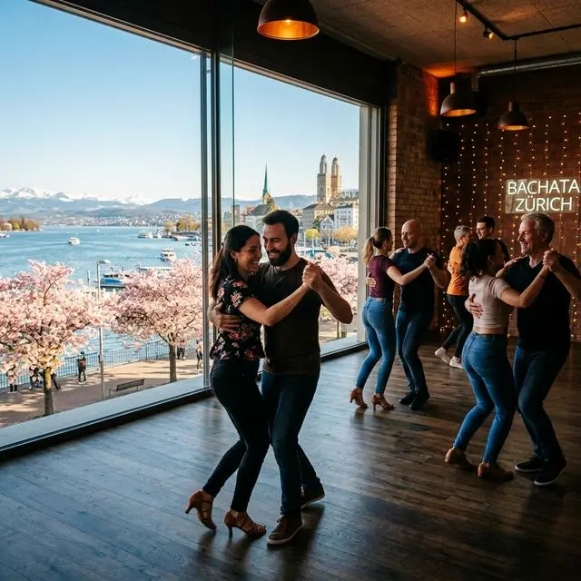

Wenn das Zürcher Seebecken in voller Blüte steht und die Tage spürbar länger werden, liegt eine besondere Energie der Erneuerung in der Luft. Doch der Frühling ist nicht nur zum Zuschauen da – es ist an der Zeit, aktiv an deinem Glück zu arbeiten und die Energie zu entfesseln, die du über den Winter gespeichert hast.
Die Wissenschaft zeigt: Der Übergang in den Frühling ist die perfekte Zeit, um neuronale Bahnen neu zu programmieren. Durch die Kombination aus vermehrtem Sonnenlicht, rhythmischer Bewegung und sozialen Kontakten kannst du dein "Frühlingserwachen" massiv verstärken. Bei AXcent Dance glauben wir, dass Glück kein passiver Zustand ist; es ist eine Entscheidung, die du jedes Mal triffst, wenn du die Tanzfläche betrittst. Wenn du bereit bist aufzublühen, schau dir unseren wöchentlichen Stundenplan an.

3 Wege, dein Glück in dieser Saison zu aktivieren
Der Serotonin-Schub
Frühlingssonne und körperliche Bewegung wirken zusammen, um deinen Serotoninspiegel in die Höhe zu treiben. Bachata fügt eine extra Ebene Freude hinzu, die dich die ganze Woche über energetisiert.
Gemeinschaft in Blüte
Genau wie Zürich aufblüht, gedeiht unsere Gemeinschaft durch die Frühlingsenergie. Triff neue Leute, lache gemeinsam und verbinde dich mit positiven Menschen. Kein Partner nötig!
Revitalisiere deinen Körper
Schüttle die Winterstagnation ab. Das Erlernen der fliessenden Bewegungen von Bachata Sensual ist der ultimative Weg, dich wieder mit deinem Körper zu verbinden und dich agil und lebendig zu fühlen.
Die "soziale Abkürzung" zu einem lebendigen Leben
Die Integration in einen neuen sozialen Kreis in Zürich kann manchmal langsam wirken, aber Tanzen fungiert als "soziale Abkürzung". Die synchrone Bewegung setzt Bindungshormone schneller frei als jede andere Aktivität. Es ist der perfekte Weg, diesen Frühling dauerhafte Freundschaften zu schliessen.
Es ist Zeit, nicht mehr darauf zu warten, dass das Glück dich findet, sondern es aktiv zu gestalten. Wir empfehlen unseren Anfänger-Guide zu lesen, um zu sehen, wie einfach der Start ist.
Wusstest du schon?
Der Frühling ist die Hochphase für Neuroplastizität – die Fähigkeit des Gehirns, neue Verbindungen zu knüpfen. Jetzt etwas Neues wie Tanzen zu lernen, hat langfristige Vorteile für deine Stimmung.
Dein Frühlings-Rückzugsort in Altstetten
Unser Studio an der Hermetschloostrasse 73 ist lichtdurchflutet und erfüllt von der intensiven, energetischen Bachata-Atmosphäre. Egal, ob du absoluter Anfänger oder Fortgeschrittener bist, es gibt keinen besseren Ort für deine Frühlingsabende als bei unserer internationalen Familie.
Starte deinen Frühlings-Reset
Schau der Jahreszeit nicht nur beim Wechseln zu – sei ein Teil davon. Komm zu einer **Gratis-Probestunde** und entdecke, wie einfach es ist, dein Glück heute aktiv zu gestalten. Kein Partner nötig!
BUCHE DEINE GRATIS PROBESTUNDE